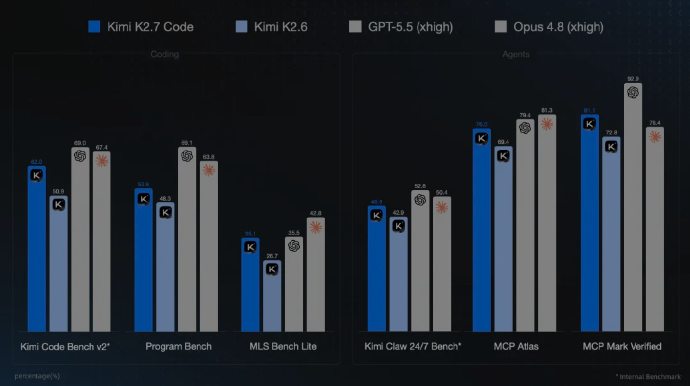

产品更新 · Kimi Code
Kimi K2.7 Code 发布并开源：编程专项大升级，高速版今日上线
本页内容
更新日期 2026.6.15 数据来源 https://vibecoding.dreamfree.space
本次核心更新：6 月 12 日月之暗面发布并开源 Kimi K2.7 Code（Modified MIT）；Kimi Code Plan 默认模型同步升级；开放平台 API 不涨按量价；6 月 15 日 高速版
kimi-k2.7-code-highspeed上线（约 5–6× 输出速度、2× 价格）；相对 K2.6 官方称长程编程与指令遵循提升，思考 token 平均 -30%；非编程任务仍推荐 K2.6。
2026 年 6 月中旬，国产大模型在 Coding 赛道继续加速。月之暗面 Kimi 于 6 月 12 日发布并开源编程专用模型 Kimi K2.7 Code，6 月 15 日又上线同权重的高速推理版本。与一周前 GLM-5.2 全量开放 Coding Plan 形成呼应，Kimi 这次走的是另一条路：名字里就写着 Code，官方明确建议「纯对话、办公用 K2.6，编程用 K2.7」——在人人都想讲 AGI 的语境里，这种主动划边界、集中力量做编程的做法相当克制。下面从能力、定价、社区实测和怎么接入手把手说清楚。
一、K2.7 Code 是什么：不是大改版，而是「编程专项后训练」
1. 架构与定位
Kimi K2.7 Code 基于 K2.6 构建，Hugging Face Model Card 给出的核心规格与 K2.6 一脉相承：
| 项目 | 参数 |
|---|---|
| 架构 | MoE（1T 总参 / 32B 激活） |
| 上下文 | 256K |
| 视觉编码 | MoonViT（400M） |
| 开源协议 | Modified MIT |
| 量化 | Native INT4 原生量化 |
社区技术解读将其类比为 GPT-5.3-Codex 一类路线：核心 MoE 与 K2.6 基本一致，更像在 K2.6 之上做 coding-focused agentic tuning——强化长上下文编程、长程 Agent 工具调用与工程任务完成率，而不是推倒重来。MoonViT、图像与视频输入能力均保留；强制 Thinking + preserve_thinking，不支持 Instant 模式。
官方口径很直白：非编程任务请继续用 K2.6。在通用对话、办公写作等场景，专用 Coding 模型反而可能倒退——这与「大语言模型正在变成大编程模型」的行业趋势一致：厂商把算力与后训练预算 increasingly 押在 ROI 更清晰的编程场景上。
2. 开源权重：改了什么，普通人怎么用
6 月 12 日起，完整权重已在 Hugging Face（moonshotai/Kimi-K2.7-Code）以 Modified MIT 协议公开。Model Card 写明：1T MoE、32B 激活、256K 上下文，并采用与 Kimi-K2-Thinking 相同的 Native INT4 原生量化。在闭源顶流越来越贵、接入限制越来越多的背景下，月之暗面把 Coding 专用版权重摊开，至少让研究与生态跟进有据可查。
对个人开发者，主路径是 Kimi 开放平台 API 与 Kimi Code 会员——普通版按量价与 K2.6 一致，需要更快响应可上高速版。下文套餐与接入均按 API / 会员展开。
二、官方能力与 benchmark：长程编程跃升，但要看清榜单性质
1. 相对 K2.6 的三条主线
月之暗面内外部评估给出的相对 K2.6 提升幅度如下：
| 基准 | 相对 K2.6 提升 |
|---|---|
| Kimi Code Bench v2 | +21.8% |
| Program-Bench | +11% |
| MLS Bench Lite | +31.5% |
| Kimi Claw 24/7 / MCP Atlas / MCP Mark Verified | 约 +10% |
同时，官方强调在长程任务中大幅改善过度思考，平均 token 消耗减少约 30%（主要来自 thinking-token 的下降）——这对 Claude Code、OpenClaw 等长会话 Agent 的直接意义是：同样任务可能更省额度、更少等待。
2. 绝对分数：接近 Opus 4.8，仍落后 GPT-5.5
Hugging Face Model Card 公布的绝对分如下（Thinking 模式，temperature=1.0，top_p=0.95）。下图与下表数据一致，图注标注 Internal Benchmark——其中多项为 Kimi 自研或厂商参与设计的基准，不能直接等同于 SWE-bench Verified 等行业通用榜。

| 基准 | K2.6 | K2.7 Code | GPT-5.5 | Claude Opus 4.8 |
|---|---|---|---|---|
| Kimi Code Bench v2 | 50.9 | 62.0 | 69.0 | 67.4 |
| Program Bench | 48.3 | 53.6 | 69.1 | 63.8 |
| MLS Bench Lite | 26.7 | 35.1 | 35.5 | 42.8 |
| Kimi Claw 24/7 Bench | 42.9 | 46.9 | 52.8 | 50.4 |
| MCP Atlas | 69.4 | 76.0 | 79.4 | 81.3 |
| MCP Mark Verified | 72.8 | 81.1 | 92.9 | 76.4 |
读表要点：
- Kimi Code Bench v2 上 K2.7（62.0）已逼近 Opus 4.8（67.4），但仍明显低于 GPT-5.5（69.0）；
- Program Bench / MLS 上与北美顶流仍有差距；
- MCP Mark Verified 上 K2.7（81.1）已超过 Opus 4.8（76.4），Agent 工具链场景值得实测。
3. Code V3、DeepSWE 这些榜还没跟上
自家 benchmark 涨得猛，但第三方工程榜这边，K2.7 的名字暂时还看不到：
| 榜单 | 现状 |
|---|---|
| LLM Benchmark Code V3 | 只有 K2.6 的老数据，K2.7 还没入榜 |
| DeepSWE 等 Agent 工程榜 | 官方、社区都没放出 K2.7 分数 |
| SWE-bench Verified 等通用榜 | 月之暗面没公布 K2.7 成绩 |
所以眼下判断 K2.7 到底能不能改写国产 Coding 格局，还得靠官方表 + 社区小样本；等 Code V3 维护者把 K2.7 跑进去，对比会更有说服力。
三、社区实测：C++ 代码审查小样本里的信号
知乎用户 杞鋂 做了一组 C++ 单文件代码审查个人评测（7 个真实历史 bug，来自 bitcoin / godot / fmt 三个大型项目；Opus 4.8 盲评；环境以 Claude Code 为主）。样本极小，仅作个人开发参考，不可推广为通用 Coding 能力排名。
1. 综合位次
在其自定义六项等权评分体系下（时效、性价比、低误报、精度、召回、克制，越低越好）：
- GPT-5.5 (xhigh) 综合第 1；
- Kimi K2.7 Code 综合第 4（Qwen 3.7 第 3）；
- 七个样本中 n02 全员漏检——C++ 对各家仍是硬骨头。
2. K2.7 相对 K2.6 的变化（同一评测者）
| 维度 | 变化 |
|---|---|
| 精度 | 真 bug 占比更高，废话更少 |
| 克制 | 报告总量约少 30%，不再「凑数」 |
| 误报 | 高危假警更少 |
| 单次成本 | 约 ¥0.139 → ¥0.103 / 次审查 |
| 耗时 | 变长 |
若你主要做 C++ / 后端代码审查（而非从零生成 UI），这组数据说明 K2.7 在「少废话、少误报、更准」上有可感知进步——但速度变慢，交互体验需自己权衡。作者亦提醒：C++ 审查比代码生成更少人工干扰，反而更适合做自动化对比。
四、使用体验：思考方式变了，简单任务可能「人狠话少」
开发者 waterwu 的体感与官方「减 thinking-token」叙事相互印证：
- K2.6：习惯 先 think、再调工具；
- K2.7：倾向 先读文件、再思考；
- 虽 API 层 强制 Thinking，但任务简单、信息明确时，K2.7 可能 不显式长思考、直接开干——整体更快、token 更少，但也有人反馈「经常不思考」会缺乏安全感。
这与「减少过度思考」并不矛盾：K2.7 更像在该想的时候想、该干的时候干。长程复杂任务仍依赖 preserve_thinking 与多步工具链；短平快补全则受益于更克制的推理开销。
展望（仅为推测）
若对照 K2.6 当年的节奏——先发布 Code 专项版、再经后训练推出不带 Code 后缀的正式全量版——有人推测月之暗面后续还可能发布 正式 K2.7 并逐步接替 K2.7 Code 的命名。这仅是社区猜测，官方尚未公布任何路线图，请勿当作既定计划。
另外，Cursor 基于 Kimi 基座训练的 Composer 2.5 在业界口碑不错，也侧面说明 Kimi 在 INT4 原生量化与 Coding 后训练上仍有挖掘空间；K2.7 Code 可视为这条产品线的又一次落地。
五、多模态与 Agent 工具链
K2.7 Code 继续支持 图像 + 视频输入（Kimi 官方 API 完整支持）。典型场景：
- 设计图 → 前端代码；
- 报错截图 → 定位与修复；
- 长仓库 + 多文件 Agent 会话。
工具调用方面须遵守 K2 系列约束：tool_choice 仅 auto / none；多轮 Agent 必须在上下文中保留 assistant 的 reasoning_content，否则 API 报错。
推荐搭配：
- 官方 Kimi Code CLI（
https://www.kimi.com/code）； - 第三方：Claude Code、Roo Code、OpenCode、OpenClaw 等，通过 Kimi Code 会员 API Key 接入。
开放平台 Base URL：https://api.moonshot.cn/v1；Kimi Code 订阅端点为 https://api.kimi.com/coding/v1（OpenAI 兼容）。
六、API 定价：普通版不涨，高速版 2× 价换 5–6× 速
1. 开放平台按量（每百万 tokens）
| 项目 | 普通版 K2.7 Code | 高速版 K2.7 Code |
|---|---|---|
| 标准输入 | ¥6.5 | ¥13 |
| 标准输出 | ¥27 | ¥54 |
| 缓存命中输入 | ¥1.3 | ¥2.6 |
普通版价格与 K2.6 完全一致；高速版为 2 倍价，输出速度约为普通版 5–6 倍——常规编程场景（输入长度中位数）约 180 tokens/s，短上下文可达 260 tokens/s。
6 月 15 日起，高速版已向 Kimi Code Beta 成员、Kimi API 开发者、Kimi Business 用户开放。模型 ID：kimi-k2.7-code、kimi-k2.7-code-highspeed。普通 Kimi Code 会员能不能默认切到高速版、什么时候开放，官方还没说清楚，得再等等公告。
对 交互密集、补全频繁 的场景，2× 价换 6× 速往往划算；对 长程 Agent 一次性跑完 的任务，仍应优先看 总 token 而非峰值速度。
2. Kimi Code 会员套餐
Kimi Code 权益包含在 Kimi 会员中，不限购，额度每 7 天刷新，另有 5 小时滚动频控。默认模型已升级为 K2.7 Code；手动关闭 Thinking 时 API 报错，Kimi Code 会回退 K2.6。
| 套餐 | 连续包月 | Kimi Code 额度倍数 | 核心权益 |
|---|---|---|---|
| Andante | ¥49 | 1× | Agent 4 倍速 |
| Moderato | ¥99 | 4× | Agent 多任务并行 |
| Allegretto | ¥199 | 20× | 免费 Kimi-Claw |
| Allegro | ¥699 | 60× | 更高 Agent 集群额度 |
社区反馈中，¥49 / ¥99 档对重度 Coding 往往偏紧，¥199 对个人又略过剩——高速版按量 API 恰好适合「用量不大但想要快」的开发者：理论上 2× 价 × 6× 速 可接近 12× 的 token 吞吐效率（仍受频控与套餐月额度约束）。
订阅入口：Kimi 会员与 Kimi Code
七、与 K2.6、GLM-5.2 及国产梯队
1. 相对 K2.6：代际跃迁，而非小修小补
官方 benchmark 上，K2.7 Code 相对 K2.6 是全面抬升；token 效率还有 -30% 的额外红利。对 已订阅 Kimi Code 的用户，这是默认免费升舱，无需改套餐。
2. 相对 Code V3 上的 K2.6（历史参照）
在 GLM-5.2 解读 所引用的 Code V3（2026-05） 中，Kimi-K2.6 (Think) 表现为 Mac 49/D、Flutter 17/C、Web 33/C、Game / Rust Failed——明显弱于同期 GLM-5.1，更遑论 GLM-5.2。K2.7 官方分的大幅跃升说明月之暗面确实在 Coding 上押了重注，但是否能在 Code V3 等新一期榜单上改写国产格局，仍需等待维护者复测。
3. 与 GLM-5.2：不同叙事，不宜硬比一张表
- GLM-5.2：1M 上下文 + Coding Plan 全量开放；Code V3 暂列综合第三。
- Kimi K2.7 Code：256K 编程专项 + 权重已开源 + API 不涨价 + 今日高速版上线。
二者都是国产 Coding 第一梯队的重要变量：智谱在长上下文与榜单实测上先声夺人；Kimi 则在开源权重、多模态 Agent 与会员不限购上保持差异化。选型应看你是 Coding Plan 限购环境下的 GLM 用户，还是 Kimi Code 存量 / 多模态 Agent 用户。
八、选型建议
已订阅 Kimi Code
- 立刻默认使用 K2.7 Code；非编程对话手动切回 K2.6（或接受 Code 回退逻辑）。
- 长 Agent 会话关注 token 是否下降；交互式编码可试 高速版 API（2× 价）。
- C++ / 后端审查场景可参考社区小样本结论，在真实仓库上做 审查而非生成 验证。
尚未订阅、考虑按量
- 开放平台 普通版不涨：适合已有
MOONSHOT_API_KEY、想接产品集成的团队。 - 高速版适合「脑子跟得上、机器也要跟得上」的短任务；长任务仍盯总账单。
与 GLM-5.2 / MiniMax-M3 如何选
- 能抢到 GLM Coding Plan 且需要 1M + Code V3 已验证的 A 档工程能力：GLM-5.2 仍是当前国产 Coding 的硬参考。
- 需要 不限购 + 多模态 + Kimi-Claw：Kimi Allegretto（¥199） 等档位仍值得对比。
- 更在意 按量速度、会员额度又不够用：可优先关注 高速版 API（2× 价、约 5–6× 输出速度）。
明确不推荐
- 纯办公、写作、通用对话：请用 K2.6，不要用 K2.7 Code 硬撑。
九、总结
Kimi K2.7 Code 不是「又一个更大的通用模型」，而是月之暗面在 Coding 上 断其一指 的专项产品：6 月 12 日发布并开源权重，6 月 15 日高速版补齐速度短板，存量 Kimi Code 用户默认升舱且 API 不涨价。官方 benchmark 与社区 C++ 审查小测共同指向一个方向——更准、更克制、更省 token。
对开发者而言，若你关心的是「在国内还能稳定用什么写代码」，K2.7 Code 走的 API + 会员 路线，和 GLM-5.2 那条 1M Coding Plan 路线，算是 2026 年国产 Coding 的两条主线。高速版今天已经能用了（目前主要是 API / Beta 等指定渠道）——建议拿自己的仓库跑一轮，再决定续 Kimi Code 会员 还是单独开 高速版按量。
数据来源 https://vibecoding.dreamfree.space
原文链接 https://vibecoding.dreamfree.space/articles/news/20260615_kimi_k27_code/